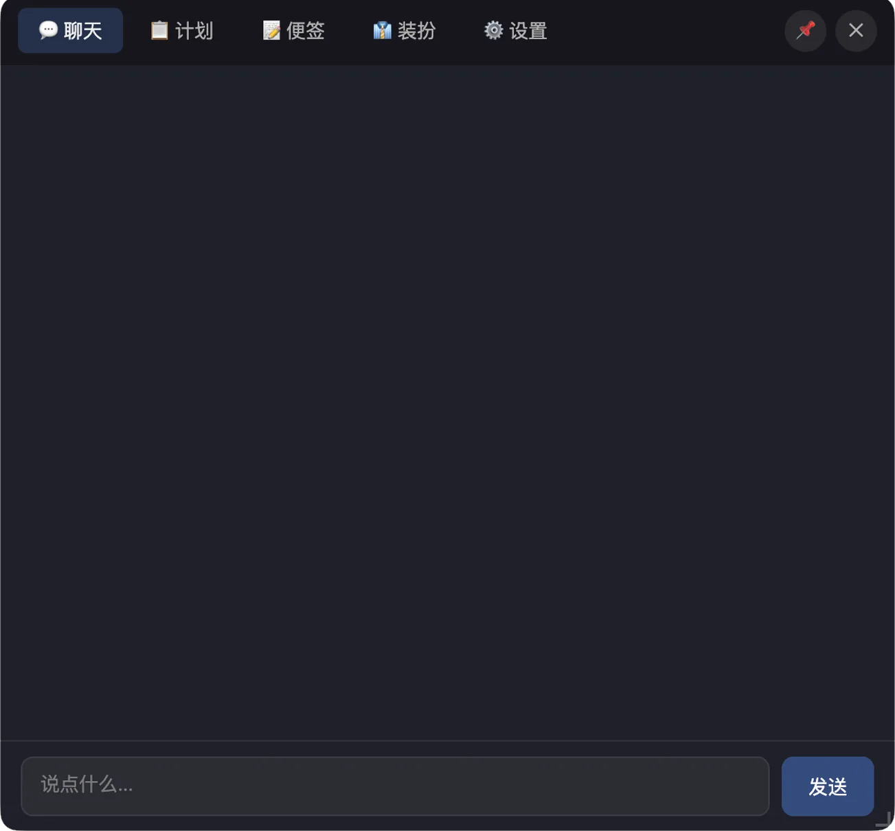
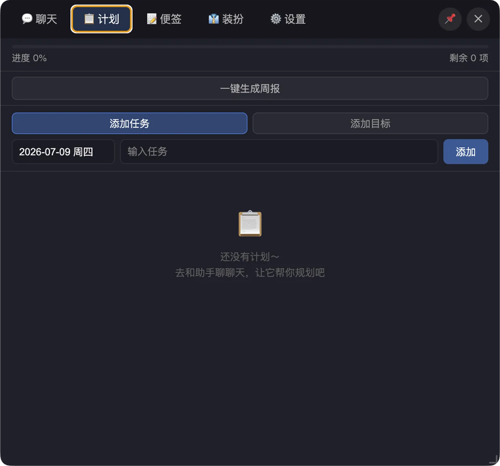
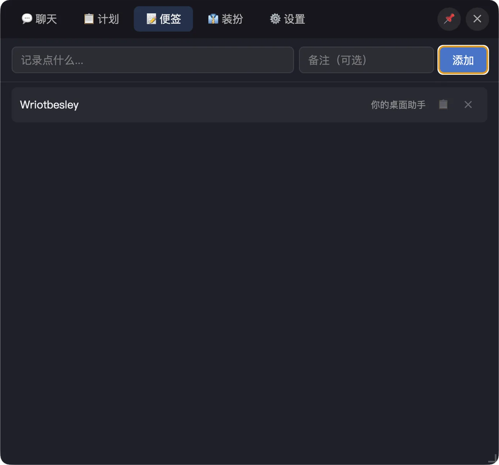
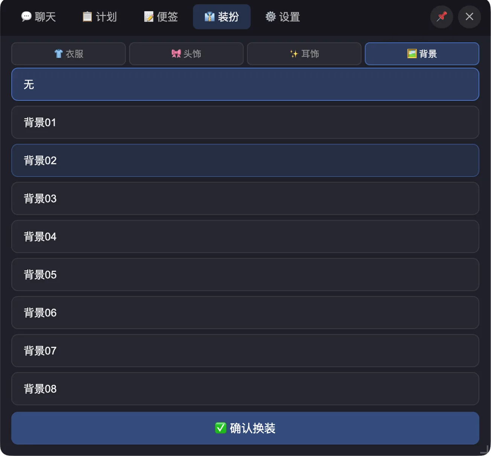
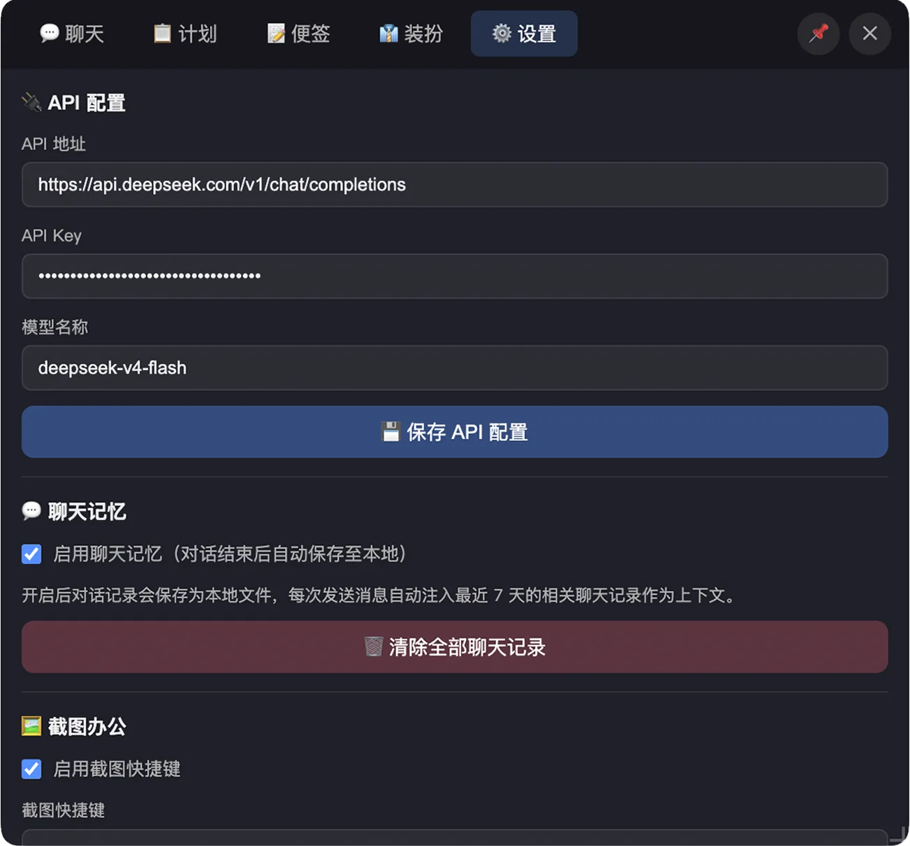

桌面角色
透明显示、置顶停靠、可拖拽，并记住上次关闭位置。
Desktop Companion
常驻桌面的 AI 助手。聊天、计划、截图 OCR、快速翻译、便签和装扮集中在一个轻量工具里。
Features
功能说明保持简洁，界面展示以真实截图为准，避免公开页和实际 App 不一致。
透明显示、置顶停靠、可拖拽，并记住上次关闭位置。
支持角色设定、历史记忆和上下文对话。
聊天可写入计划，任务完成后可整理周报。
区域截图、保存、复制、文字识别和翻译。
记录常用信息，快速复制临时内容。
管理 API、快捷键、主题、透明度和角色外观。
Screenshots
请把截图放入对应文件名。图片加入后，页面会直接显示真实 App 界面。

assets/screens/panel-chat.webp展示角色对话、历史记忆和输入区域。

assets/screens/panel-plan.webp展示任务列表、状态切换和周报入口。

assets/screens/panel-notes.webp展示内容记录、备注和复制操作。

assets/screens/panel-wardrobe.webp展示服装、头饰、耳饰选择。

assets/screens/panel-settings.webp展示 API、快捷键、主题和透明度配置。
Shortcuts
截图、翻译、剪贴板保存和短文本窗口都可以通过全局快捷键唤起，也可以在设置中重新录制。
区域截图、保存、复制、文字识别和翻译。
翻译当前选中的文字，并以浮窗展示结果。
快速保存剪贴板中的文件或图片。
打开或隐藏临时短文本窗口，便于反复复制。
Wardrobe
这里仅展示合成后的公开预览图，不包含分层素材。
Privacy
账号数据、计划、聊天和便签默认保存在本机。API Key 只保留在本地配置中。
同一台电脑可多人使用，退出登录后回到登录页。
API 地址、Key 和模型配置不随账号上传。
计划写入带备份恢复，降低本地文件损坏风险。
Download
安装包通过百度网盘提供。首次在其他 Mac 上打开时，如提示无法验证开发者，可按下方说明处理。
sudo xattr -r -d com.apple.quarantine /Applications/Wriothesley.app